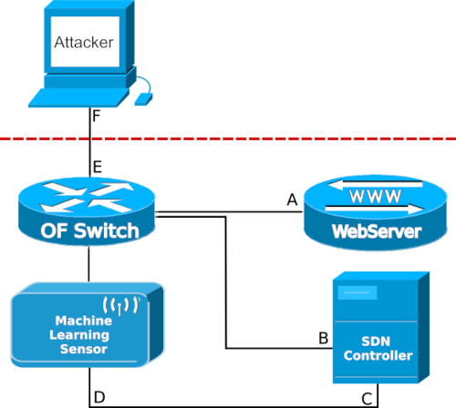

Test environment configuration
The network simulation was carried out using the GNS3 tool (https://www.gns3.com/).
SDN architecture
TheA Software defined network (SDN) architecture was used for the test. The proposed controller was developed using the Ryu SDN Framework.
An Openflow Switch is required for the model. The Controller was configured for the OpenFlow Switch to work as a layer 2 and 3 switch of the OSI model.
The controller files used in the tests are available at https://github.com/marcostiribeiro/toolroom/tree/main/controller
To carry out the tests, real virtual machines were used. Virtual machine images are available for download below:
The test environment configuration is demonstrated in the image below:
The IPs of the Virtual Machine interfaces:
"B" : "IP 10.10.10.200/24" ,
"C" : "IP 192.168.0.100/24" ,
"D" : "IP 192.168.0.200/24" ,
"E" : "10.10.10.1/24" ,
"F" : "10.1.1.200/24" ,
The tool has two execution modes: remote and local. These modes depend on other configuration parameters for their operation:
- "model":"__" - Machine Learning algorithm that will be used.
- "model":"RF" - model Random Forest
- "model":"GNB" - model Gaussian Naive Bayes
- "model":"SVM" - model Support Vector Machine
- "model":"NN" - model Neural Networks
- "model":"SC" - model Stacking Classifier
- "interface_controller":"enp0s3" - In this parameter, the name of the operating system's network interface will be inserted. This interface will contact the security system. Configuration required for remote mode only
- "interface":"enp0s8" - Interface where the switch flow will be collected.
- "server":"192.168.0.100" - Security server address. Configuration required for remote mode only
- "login":"sensor_B" - Pre-configured login to the security server. Configuration required for remote mode only.
- "password":"abc" - Pre-configured password on the security server. Configuration required for remote mode only.
- "servers":["10.1.1.201"] - IPs that will be monitored by the sensor.
- "url_server_connect":":8080/stats/parameter/" - URL address will be used to communicate with the security server and request credentials for access.
- "url_server_set_ip":":8080/stats/black_list/" - URL address will be used to communicate to the security server when a malicious user is identified.
- "service":"remote" - In remote mode, the preconfigured security server will receive sensor messages when a user is identified as malicious.
- "service":"local" - In local mode, the sensor will act as a local firewall and when it is identified as malicious it will block user activity. This mode has only 3 mandatory parameters: "model", "interface" and "servers".
The diagnostic type has two modes: prediction and probabilistic.
- "type":"predict" - In prediction mode, user flow diagnosis is performed by the Machine Learning algorithm. This mode sends from the defined URL "'http://server_ip.url_server_set_ip". A json data is assembled to be sent with the following signature.
- "type":"probabilistic" - In probabilistic mode, the probability of the user's action being considered an attack is generated for the IPs configured for monitoring (parameter "servers"). Only two algorithms are supported with this feature: Random Forest and Neural Networks. Therefore, the "model" parameter must be "RF" or "NN". Unlike the "predict" model, the algorithm does not diagnose the attack, but the probability of it being. The URL is the same as the predictive model. A json data is assembled to be sent with the following signature.
"id" : sensor ID,
"A" : login,
"B" : Mac Address,
"C" : Malicious IP,
"'D' : Packet counter,
{
"id" : sensor ID,
"A" : login,
"B" : Mac Address,
"C" : Malicious IP,
"'D' : Packet counter,
"'F' : Attack probability,
{
- "linecount":"1000" - Quantity of package that are collected to be tested by the sensor. The greater the number of packets, the greater the detection time. The tested value was 600 packages.
- "show_detect":"True" - Parameter used to display IPs identified as malicious during execution.
- "generate_report":"True" - When set to True, it creates a report of packages diagnosed as malicious, the quantity and the date/time of detection.